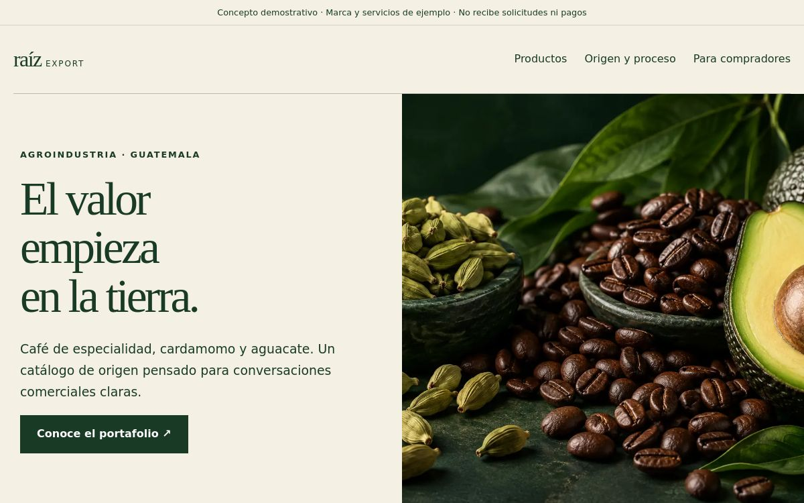
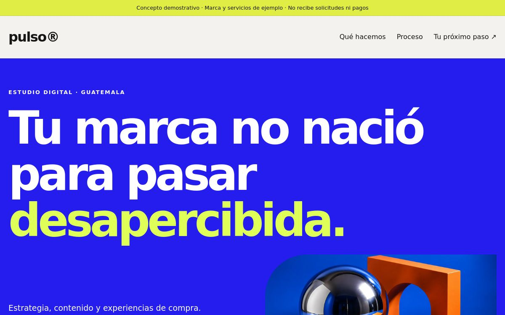
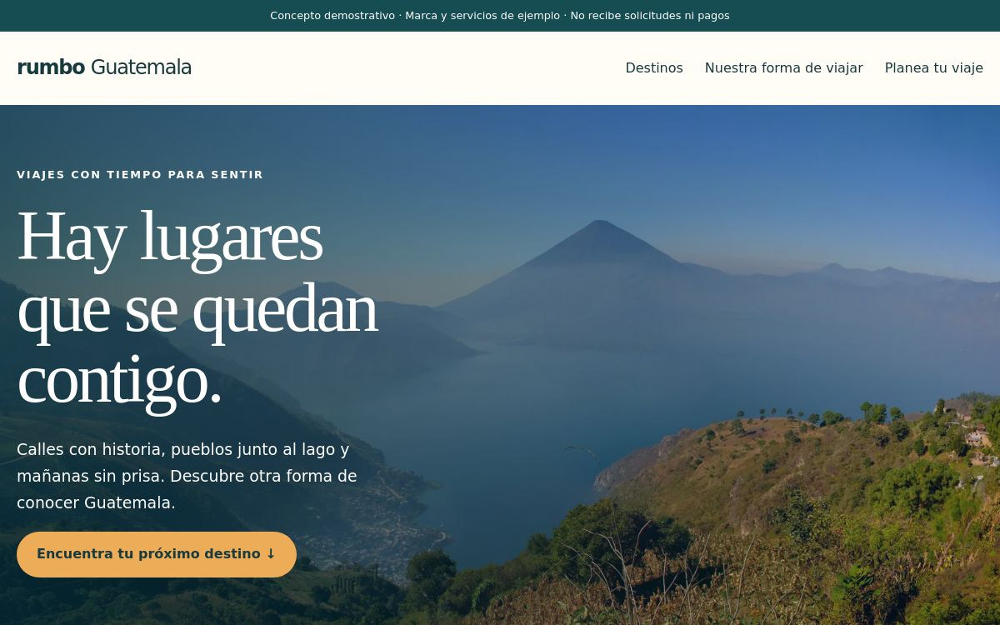
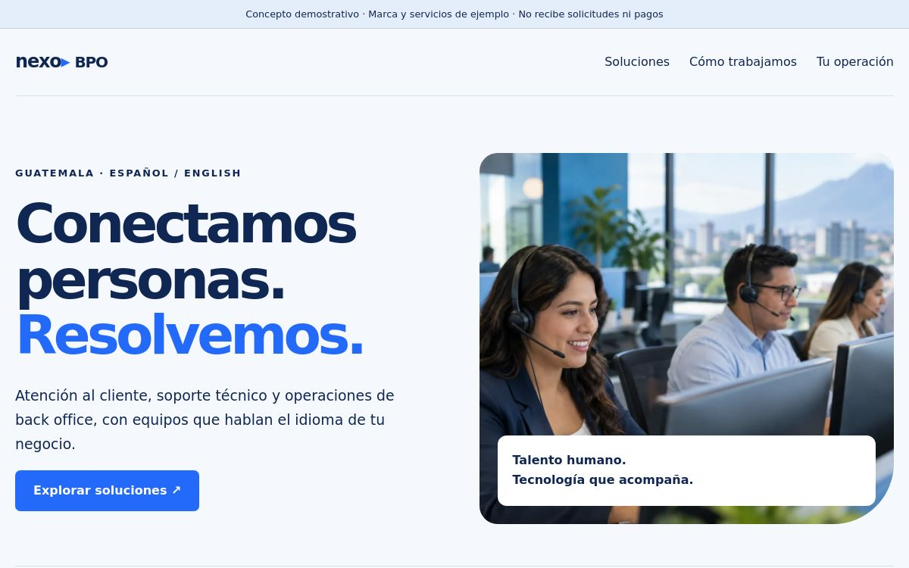
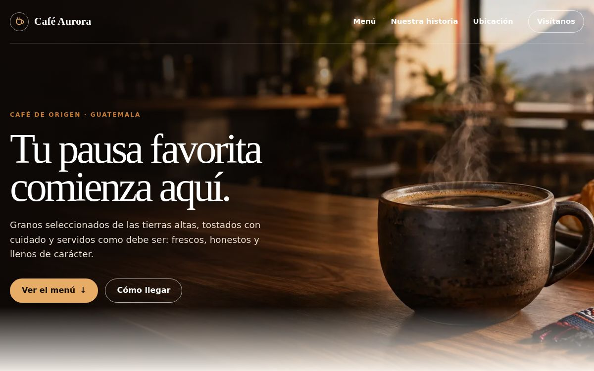

Tu propio espacio online
Páginas de presentación, sitios de negocio y catálogos que se ven bien en computadora y celular.
Desde Q150 ↗ESTUDIO DIGITAL · GUATEMALA
Páginas web, contenido y automatización para que tu pequeño negocio dé un gran paso online.
Ideas claras. Diseño con intención. Trato directo.


01 / LO QUE HACEMOS
Una presencia profesional empieza con lo que tu negocio necesita. Ni más, ni menos.
Páginas de presentación, sitios de negocio y catálogos que se ven bien en computadora y celular.
Desde Q150 ↗Publicaciones, promociones, flyers y piezas visuales con una imagen coherente para tu marca.
Desde Q30 ↗Videos publicitarios y piezas cortas para presentar productos, servicios y promociones en redes.
Desde Q50 ↗Asistentes para WhatsApp que orientan con información de tu negocio y derivan las consultas que necesitan atención humana.
Instalación y uso bajo cotizaciónMenús digitales y catálogos con QR para que tus clientes consulten productos, servicios y precios desde su teléfono.
Según contenido y alcanceCreatividades y preparación de anuncios para tus campañas. El presupuesto de difusión se acuerda por separado.
Cotización por campaña02 / PORTAFOLIO
Explora nuestras páginas de muestra. Son conceptos demostrativos, no clientes ni resultados comerciales acreditados.
Marketing digital & e-commerce

Turismo & hospitalidad

Call center & servicios empresariales
Agroindustria & café de especialidad

Una identidad cálida, un menú fácil de explorar y un espacio para contar la historia del negocio.
Abrir página de muestra ↗Este ejemplo tiene acceso restringido y puede solicitar inicio de sesión.
Cada enlace abre la página original en otra pestaña. Las marcas, precios y datos comerciales de las muestras son ilustrativos.
03 / PRECIOS CLAROS
Precios de entrada en quetzales. El costo final depende del contenido, la complejidad y los entregables acordados.
DISEÑO PUBLICITARIO
DesdeQ30
Piezas gráficas para comunicar lo que tu negocio ofrece.
PÁGINA WEB
DesdeQ150
Precio inicial para una página sencilla. Los proyectos del portafolio se cotizan según su alcance.
VIDEO PUBLICITARIO
DesdeQ50
Contenido en video para mostrar productos y promociones.
Dominio, alojamiento, mantenimiento, presupuesto de anuncios y suscripciones externas se detallan por separado cuando correspondan. Los asistentes con IA, menús QR, catálogos, tiendas y trabajos a medida requieren cotización. No se cobra nada desde esta página.
04 / ASÍ TRABAJAMOS
Conoces el alcance antes de pagar. Ves el avance antes de completar el saldo.
Acordamos por escrito el servicio, el precio total, los plazos y las correcciones incluidas.
Confirmamos el anticipo y recibimos textos, imágenes y la información necesaria para empezar.
Te mostramos una vista previa y aplicamos las correcciones dentro del alcance acordado.
Pagas el 50% restante al aprobar. Tras confirmar el saldo, entregamos los archivos y accesos acordados.
La entrega definitiva se realiza después del pago completo.
ANTES DE EMPEZAR
Webify es un proyecto de servicios digitales de Gilson Portillo, en Guatemala. Un trato directo, desde la primera idea hasta la entrega.
No. Es un precio de entrada para una página sencilla. La cantidad de secciones, el contenido, las funciones y las integraciones determinan la cotización. Las cinco páginas del portafolio muestran distintos estilos, no un paquete único de Q150.
El nombre del negocio, qué ofreces, el objetivo del proyecto, tus textos e imágenes disponibles y una fecha deseada. Definimos lo que falta antes de comenzar.
Sí. Después del anticipo recibes una vista previa para revisar y aprobar el resultado. Los archivos finales y accesos acordados se entregan cuando se confirma el pago completo.
Se define qué preguntas puede responder, qué información utiliza y cuándo debe derivar a una persona. La instalación, el consumo de la plataforma y el mantenimiento se cotizan por separado. Requiere una integración autorizada y no garantiza respuestas perfectas.
La cotización indica las correcciones incluidas. Las nuevas funciones, cambios de alcance y actualizaciones posteriores se acuerdan por separado, antes de hacerlos.
No. El diseño y las campañas ayudan a comunicar tu oferta, pero las ventas dependen también del producto, el mercado, el presupuesto y la atención al cliente. Acordamos entregables concretos, no resultados garantizados.
TU PRÓXIMO CAPÍTULO
Cuéntanos qué hace tu negocio y qué te gustaría mejorar. Ese es el punto de partida.
Escríbenos al +502 4409 0418 para conversar sobre tu proyecto.